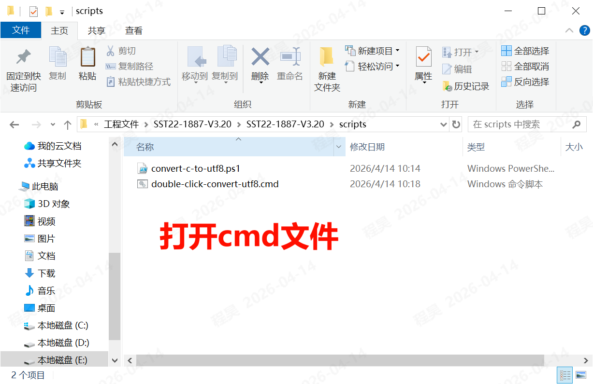
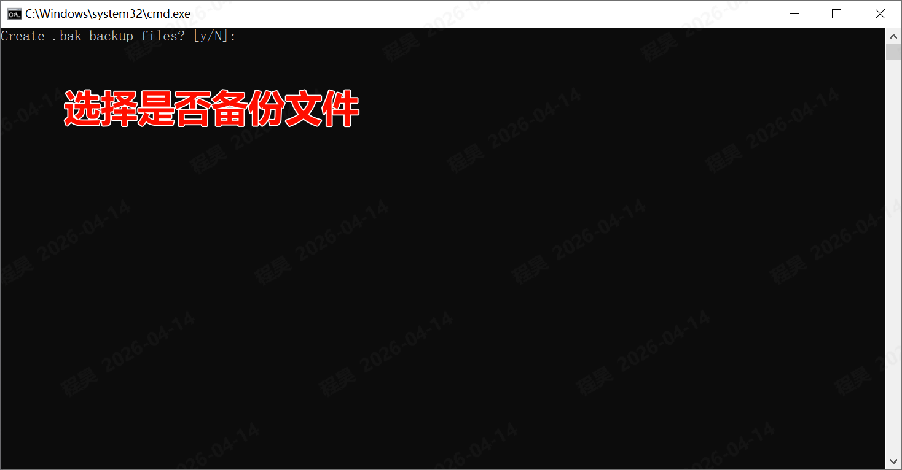
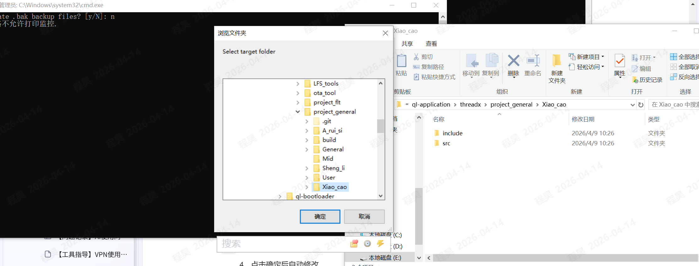
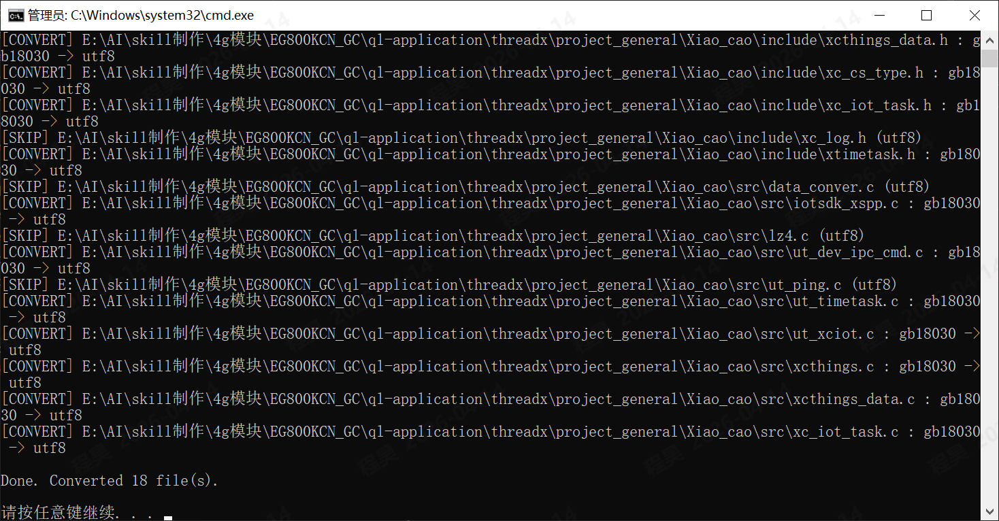
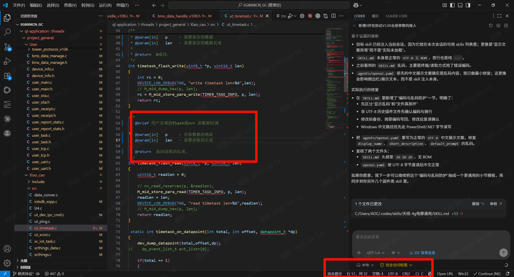
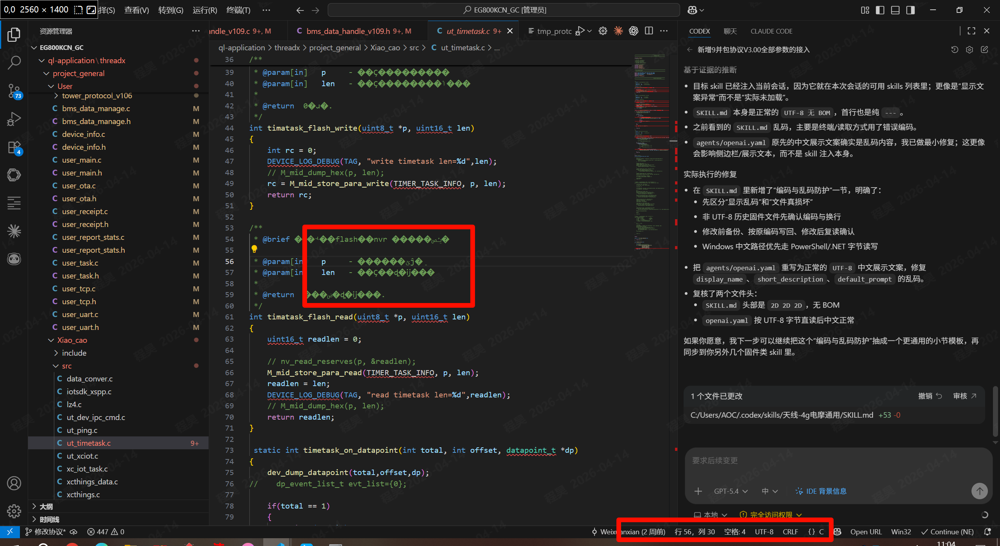

提效工具
文件编码格式转UTF-8工具
文件编码格式转UTF-8工具用于批量将项目目录下的 .c 与 .h 文件转换为 UTF-8 编码，减少乱码、注释异常和编辑器显示错误。
仅扫描并处理目标目录下的 .c 与 .h 文件，不扩展到其他文件类型。
执行前可选择是否生成 .bak 备份文件，正式项目建议优先备份。
控制台输出 [CONVERT]、[SKIP] 和 Done. Converted 结果汇总，便于确认执行情况。
具体流程
阶段 1
准备文件与脚本
确认编码转换脚本与启动用 .cmd 文件位于同一文件夹下，确保可以直接双击启动。

阶段 2
启动转换并选择是否备份
双击打开 .cmd 启动文件，进入命令行交互界面。根据项目要求输入 y 或 n：输入 y 会生成 .bak 备份，输入 n 会直接执行转换。

阶段 3
选择目标文件夹
在弹出的文件夹选择窗口中，定位并选择需要转换的项目目录。程序会自动扫描该路径下所有 .c 和 .h 文件。

阶段 4
执行批量转换
点击确认后等待程序自动扫描并转换文件。关注控制台中的 [CONVERT]、[SKIP] 和 Done. Converted XX file(s). 汇总信息。

阶段 5
验证转换效果
使用 VS Code 或其他代码编辑器打开已转换文件，确认中文注释、字符串内容和文件编码状态均正常。

转换效果对比

关键控制点
| 执行前 | 确认脚本文件与 .cmd 启动文件位于同一目录，并核对目标项目路径。 |
| 备份策略 | 正式项目优先输入 y 生成 .bak 备份文件，降低批量修改风险。 |
| 执行中 | 关注控制台 [CONVERT]、[SKIP] 和最终汇总信息，确认程序没有异常终止。 |
| 执行后 | 至少抽查核心模块文件，确认中文显示正常且代码内容未被破坏。 |
风险提示
禁止在未确认目标路径的情况下直接执行批量转换，避免误修改其他工程文件。
正式代码库转换完成后，必须抽查关键文件，确认中文注释和编码状态正常后再提交。
该工具仅扫描 .c、.h 文件，不要默认认为其他文件类型也会被转换。